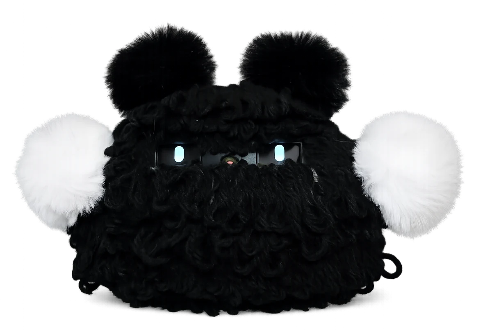
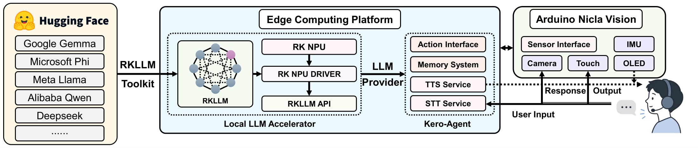
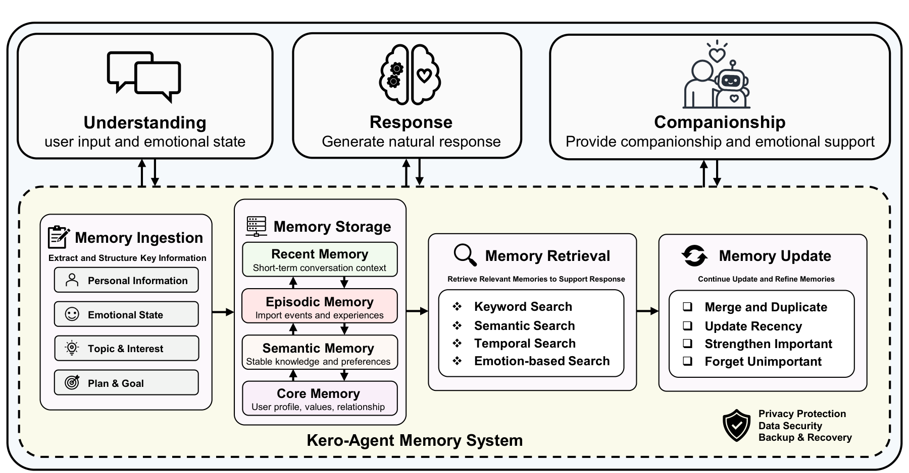
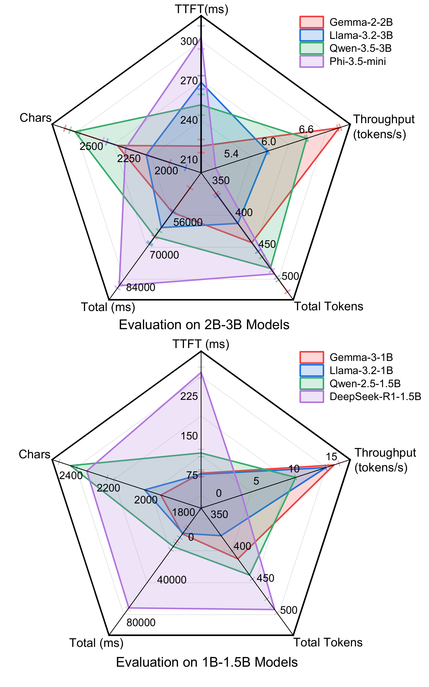
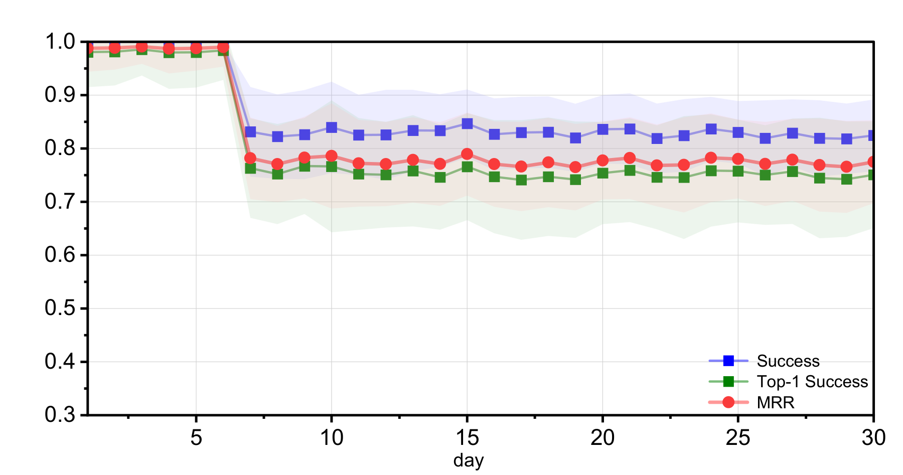
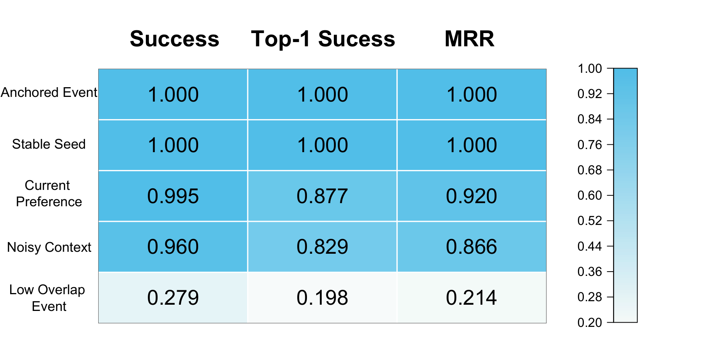
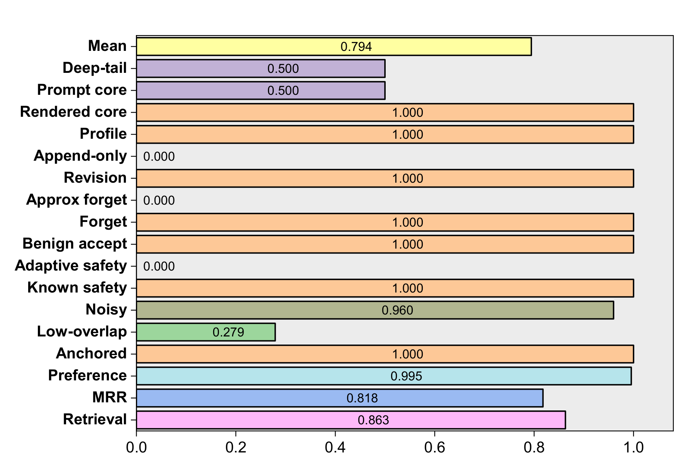
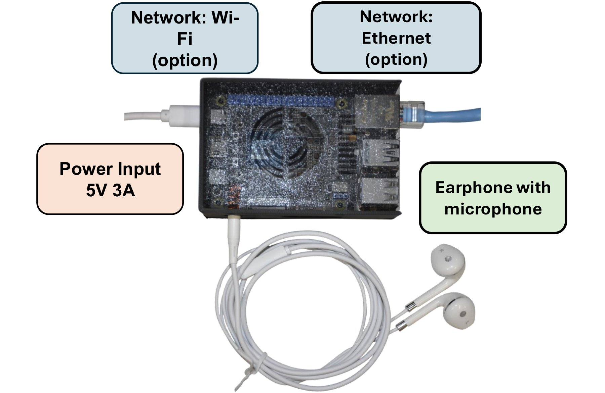

The Kero-Agent prototype: a wool-covered companion robot whose LLM, memory, speech, and sensing all run onboard.
Companion robots used in homes and care environments need fast response and long-term user memory. However, cloud-based inference sends interaction data to external services and also brings continuous API costs. This paper presents Kero-Agent, an edge-native companion robot system based on the Rockchip RK3588. The system combines local LLM inference, multimodal sensing, and long-term memory. Its memory is divided into recent, episodic, semantic, and core information. An asynchronous reflection process is used to update user context without changing the model weights. In onboard inference tests, the best 1B-class configurations achieved a time to first token of about 75 ms and a generation speed of 15 tokens/s. We also conducted a 30-day memory stress test with 72 simulated users and 103,680 retrieval probes. The system achieved a Success score of 0.863, a Top-1 Success of 0.799, and a mean reciprocal rank of 0.818. A physical prototype was built with edge computing, tactile and inertial sensing, audio interaction, and expressive output. The results show that long-term companion services can run locally on resource-constrained robots with practical inference speed and stable memory retrieval.
Open-source LLMs are converted to the RKLLM format and served by a local, OpenAI-compatible endpoint on the RK3588 NPU. The same board retrieves long-term user context, coordinates sensor events, and drives speech and expressive behavior. Interaction is turn-based: the LLM request is sent only after speech recognition returns the full transcript. No network connection is needed during normal dialogue and memory processing.

User context is split into four layers, from short-lived dialogue to stable identity. Every layer is stored as a local file. Personalization comes from updating this stored context; the LLM weights never change.
The last eight dialogue turns, for short-term coherence.
sessions/current.jsonlEvents, reflection summaries, and extracted facts, each with an importance score and timestamp.
memory/long_term.jsonlA structured profile of facts, preferences, communication style, and topics.
profile/profile.jsonA bounded user profile and companion strategy, inserted into every prompt.
memories/USER.md MEMORY.md
Each stored item m is scored against the query q on the CPU. Because no neural embedding model is used, retrieval never competes with the LLM for the NPU.
Items scoring at least 0.04 are ranked. The top-k items are added to the prompt as a separately marked memory block.
Before reporting results, we define what a companion service needs from the platform. Each result is then checked against these requirements.
Users of communication robots prefer a response in about 1 s. Speech recognition and synthesis share that budget, so the LLM's time to first token must stay below 0.5 s.
✓ Met: 75–210 msGeneration must stay ahead of speech playback. Speech at about 150 words/min needs roughly 3–4 tokens/s.
✓ Met: 15 and 7.2 tok/sThe target evidence must appear in the top eight candidates, and revised preferences must outrank stale ones.
◐ Met for 4 of 5 conditionsDialogue, memory, and inference must run on the device without network access.
✓ By designEight open-source models in two size classes were converted with the RKLLM Toolkit and benchmarked on the RK3588 NPU: three warm-up turns, then 15 measured turns. TTFT runs from request submission at the local model interface to the first generated token. It includes prompt prefill but excludes speech recognition and synthesis.
| Configuration | TTFT | Throughput |
|---|---|---|
| Gemma-3-1B / Llama-3.2-1B | ≈ 75 ms | ≈ 15 tok/s |
| Gemma-2-2B | ≈ 210 ms | 7.2 tok/s |
The 1B-class models use under 8% of the 1 s response budget. Gemma-2-2B still leaves about 0.8 s for speech recognition, retrieval, and synthesis. Model size is therefore a real design parameter, even on the same edge platform.
Models tested — 1B–1.5B: Gemma-3-1B, Llama-3.2-1B, Qwen-2.5-1.5B, DeepSeek-R1-1.5B. 2B–3B: Gemma-2-2B, Llama-3.2-3B, Qwen-3.5-3B, Phi-3.5-mini. This benchmark measures latency and throughput, not response quality.

The memory benchmark runs without LLM generation, so storage, update, and retrieval are measured on their own. It simulates 72 users with profiles from 20 professional domains over 30 days, with 48 queries per user per day: 103,680 retrieval probes in total. The benchmark also includes 600 safety-boundary checks, 216 revisions, 144 forgetting operations, and 432 prompt-budget measurements. Ground truth comes from construction: each probe has exactly one target item written by the generator. For preference probes, that target is the latest revision.
| Condition | Success@8 | Top-1 | MRR |
|---|---|---|---|
| Anchored Event | 1.000 | 1.000 | 1.000 |
| Stable Seed | 1.000 | 1.000 | 1.000 |
| Current Preference | 0.995 | 0.877 | 0.920 |
| Noisy Context | 0.960 | 0.829 | 0.866 |
| Low Overlap | 0.279 | 0.198 | 0.214 |
| All probes | 0.863 | 0.799 | 0.818 |
Success@8: the target is in the top eight. Top-1: the target is ranked first. MRR: mean reciprocal rank, counted as 0 outside the top eight.
Retrieval is reliable for stable, anchored, revised, and noisy queries. It breaks down for low-overlap paraphrases: the hashed token vectors cannot recognize a paraphrase that shares few words with the stored item. A compact on-device embedding model is the natural next step.




This work evaluates system feasibility, not companion effectiveness. The memory workload uses synthetic profiles, and the inference benchmark measures latency rather than conversational quality. On the physical robot, so far we have verified only that the full pipeline runs. End-to-end response timing, touch-triggered responses, and studies with human participants are future work. Local processing reduces privacy risks but does not eliminate them.
@inproceedings{he2027keroagent,
title = {Kero-Agent: An Edge-Native Companion Robot with Hierarchical Memory and Local Large Language Model},
author = {He, Mingshan and Tanaka, Hiroto},
booktitle = {Proceedings of the IEEE/SICE International Symposium on System Integration (SII)},
year = {2027}
}